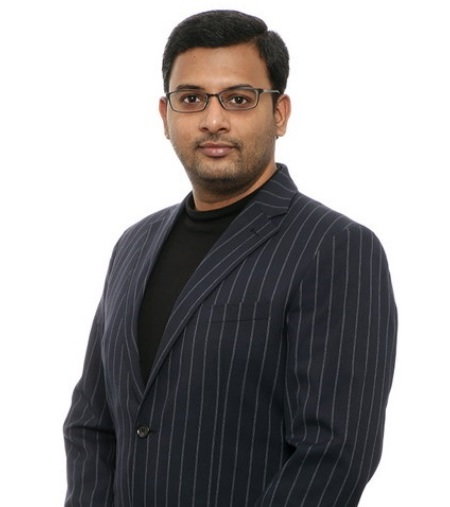

Global PMO & Portfolio Governance
Establishing enterprise PMO capabilities, governance frameworks, executive reporting and delivery standards across distributed portfolios and regional operating models.
Technology Leadership · Tokyo, Japan
Director, Enterprise Transformation & Strategic IT
Global PMO · Technology Governance · Business-Aligned Transformation
I build the governance and execution architecture that connects enterprise strategy to measurable business outcomes. Across global technology organizations, my remit has included establishing a Global PMO Center of Excellence, governing post-merger integration, modernizing enterprise platforms and directing complex cloud transformation.

Leadership mandate
15+ years across semiconductor, financial services, insurance, e-commerce and enterprise software. The common thread is building operating models that improve governance, delivery predictability and business control.
Establishing enterprise PMO capabilities, governance frameworks, executive reporting and delivery standards across distributed portfolios and regional operating models.
Connecting technology roadmaps with business priorities across M&A integration, operating-model change, financial controls, data governance and cross-functional decision-making.
Directing complex modernization across infrastructure, applications and cloud platforms, with accountability for investment, risk, dependencies, stakeholder alignment and operational readiness.
Enterprise impact
Selected measures from enterprise transformation and operational improvement mandates.
Career progression
A progression through entrepreneurship, technology delivery and enterprise-wide leadership across distinct operating environments.
Established the Global PMO Center of Excellence and institutionalized a standardized, data-driven governance model. The remit spans global portfolio visibility, execution playbooks, M&A integration governance and alignment between regional delivery teams and Japanese headquarters.
Led Corporate IT initiatives across enterprise applications and business-process modernization. Worked across Finance, HR and engineering stakeholders to shape solution direction, govern delivery priorities and improve the reliability of services used across the organization.
Held technology strategy and service-delivery responsibilities across insurance and financial-services environments. Directed a major AWS modernization mandate in Japan and established global security-compliance governance for a financial-services software portfolio.
Co-founded and scaled an ERP solutions business, with responsibility for P&L, product roadmaps, commercial operations and customer delivery. Built the operating discipline required to grow the business while improving service responsiveness and profitability.
Progressive responsibilities across enterprise software engineering, system architecture, technical support and team leadership.
Selected outcomes
Four examples of enterprise problems addressed through platform modernization, process redesign, cloud delivery and governance.
Replaced a high-cost licensed facility-management solution with an internally developed 2D platform, improving control over the application and its operating model.
Redesigned the employee event-creation workflow through an internal application, removing manual coordination and reducing end-to-end turnaround.
Directed a legacy-to-AWS transformation for an insurance technology platform supporting digital services for two major Japanese telecom operators. Coordinated delivery across Japan, India and the Philippines.
Centralized vulnerability management and security governance across a global software portfolio, supported by an automated compliance process for audit readiness.
Credentials & education
PMP® | PRINCE2® | Agile Scrum Master (ASM®)
ITIL® | Six Sigma Green Belt 6σ®
Robotoic Process Automation | Digital Marketing & Strategy | MCP
M.S. in Global Information and Telecommunication Studies, Waseda University, Tokyo, Japan.
English: Native-level proficiency
Japanese: Functional working proficiency
Contact
For executive opportunities and professional enquiries, connect by email or LinkedIn.